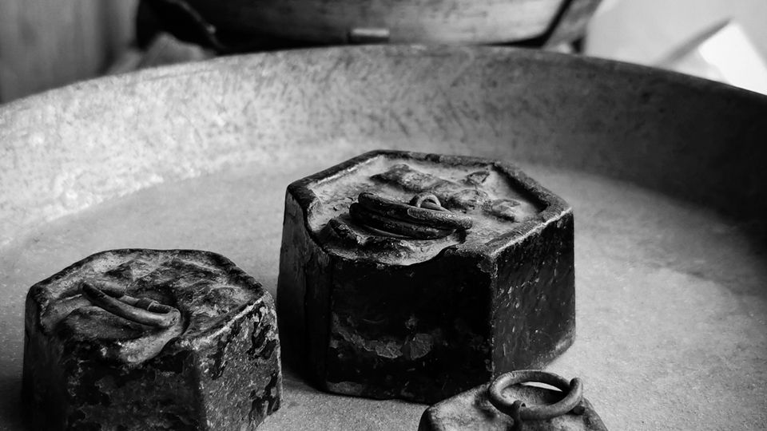
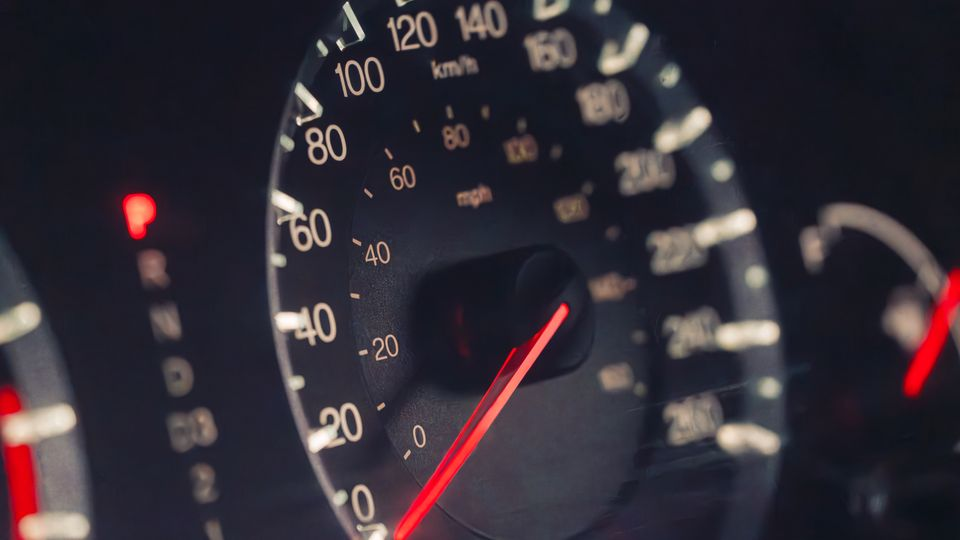
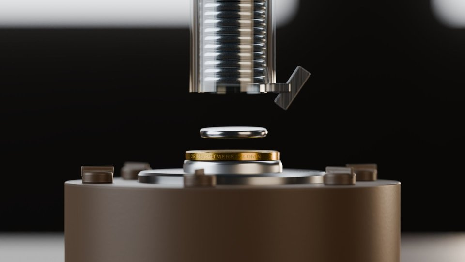

Gymnázium
Kvinta/1. ročník
Úvod
Pomůcky a procvičovací nástroje k úvodu do fyziky.

Kinematika
Pomůcky a materiály k pohybu hmotného bodu.



Dynamika
Příčiny pohybu těles: síla a její účinky.

Pomůcky a procvičovací nástroje k úvodu do fyziky.
Pomůcky a materiály k pohybu hmotného bodu.

Příčiny pohybu těles: síla a její účinky.
